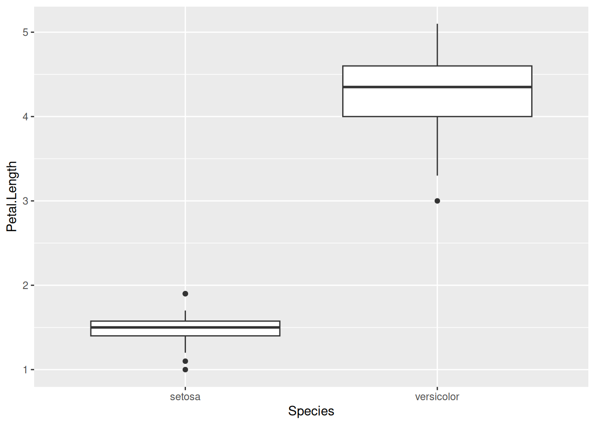
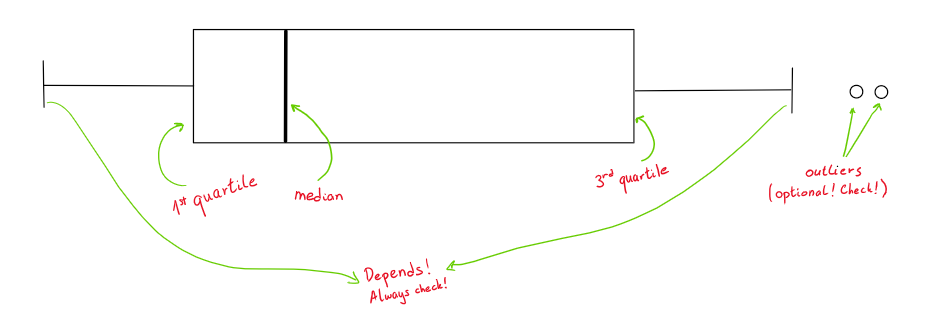
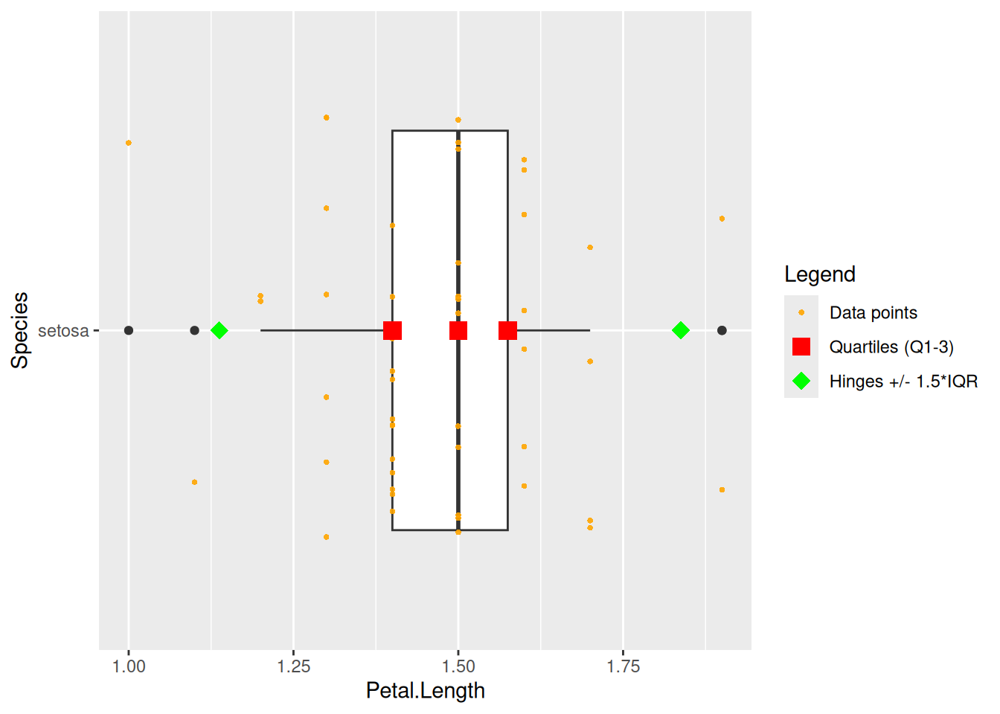

A box plot, or box-and-whiskers plot, is a graphical summary of all the observations of a single numerical trait in your data. It’s a quick way of seeing the spread (not the distribution tho!) and the 5 basic summaries:
- minimum
- first quartile1 (25%)
- median (second quartile, 50%)
- third quartile (75%)
- maximum
library(datasets) # for loading irislibrary(ggplot2) # for plottingsuppressMessages(library(tidyverse))data(iris)# brief transformation so we see only two groups of Species (instead of three) iris %>% dplyr::filter(Species %in%c("setosa", "versicolor")) %>%ggplot() +geom_boxplot(mapping =aes(x = Species, y = Petal.Length))

Even without knowing what each part of a boxplot is, you can tell there seems to be some kind of difference worth investigating further.
When to use this?
I’d use this more for quick comparisons between groups with the same trait of interest.
Do not over-interpret, there is no statistical test here claiming these 2+ groups are statistically different from each other! More on that in Statistical Tests TBA. There are notched box plots that somewhat coincide with 95% CIs for medians, but you would need to test for a difference between medians regardless. Caveats:
- Box plots also hide info like distribution and sample size. If I would like to see the distribution, I find violin plots2 more useful. Sample size could be seen with adding each data point with e.g. jitter.
- If you feel strongly about about how the median or quartiles are calculated, be wary! Check how the box plot is calculating it (R has 9 types of quantile calculations, see here). With a larger3 number observations, they converge, but on smaller datasets you can see a difference.
Interpreting a box plot
Now let’s look at the details of a box plot.

Box plot characteristics
The box starts and ends (called hinges) with the \(1^{st}\) and \(3^{rd}\) quartile, with the median denoted inside the box. The length of the box is called the interquartile range and is commonly abbreviated as IQR. It’s calculated as \(3^{rd} quartile-1^{st} quartile\).
The boxplot function you are working with determines how long the whiskers will be. Check the docs for your function of interest! Above I used ggplot2::geom_boxplot that states:
The upper whisker extends from the hinge to the largest value no further than 1.5 * IQR from the hinge (where IQR is the inter-quartile range, or distance between the first and third quartiles). The lower whisker extends from the hinge to the smallest value at most 1.5 * IQR of the hinge. Data beyond the end of the whiskers are called “outlying” points and are plotted individually.
So for ggplot2::geom_boxplot, the right whisker extends to the last datapoint that is no further than 1.5 * IQR from the right hinge, and outliers are considered everything greater. Analogous for the left whisker.
Other box plot functions could e.g. just extend the whiskers to the min and max datapoints, meaning there are no outliers in that scenario.
On real data:
setosas <- iris %>% dplyr::filter(Species %in%c("setosa")) %>% dplyr::mutate(point_type ="data_point")five_quantiles <-quantile(setosas$Petal.Length)quartiles <- five_quantiles[c("25%", "50%", "75%")]IQR <- quartiles[["75%"]] - quartiles[["25%"]] # the numbers that are compared to data points to determine whisker endsfences <-c(quartiles[["25%"]] -1.5*IQR, quartiles[["75%"]] +1.5*IQR)summaries_to_overlay <-data.frame(Species ="setosa",Petal.Length =c(quartiles, fences),point_type =c(rep("quartile", length(quartiles)),rep("whisker_ends", length(fences)) ))point_type_colours <-c("data_point"="orange", "quartile"="red", "whisker_ends"="green")point_type_labels <-c("data_point"="Data points", "quartile"="Quartiles (Q1-3)", "whisker_ends"="Hinges +/- 1.5*IQR")point_type_shapes <-c("data_point"=16, #"dot", "quartile"=15, # "square", "whisker_ends"=18#"diamond" )ggplot(data = setosas, mapping =aes(x = Petal.Length, y = Species)) +geom_boxplot() +# each individual data point will be seen by only jittering vertically, # not horizontally thanks to width = 0geom_jitter(mapping =aes(color = point_type,shape = point_type), size=1, alpha=0.9, width =0) +# quartiles are red squares# the +/- 1.5*IQR are green diamonds, making it easier to see why some are# outliers, and which datapoints have been "chosen" for whisker endingsgeom_point(data = summaries_to_overlay, mapping =aes(x = Petal.Length, y = Species, color = point_type,shape = point_type), size =4) +labs(color ="Legend",shape ="Legend") +scale_color_manual(values = point_type_colours,labels = point_type_labels) +scale_shape_manual(values = point_type_shapes,labels = point_type_labels)

Footnotes
25% of your observations are numerically less than this number↩︎